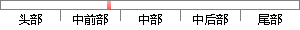

2008年，中本聪在《Bitcoin：A peer-to-peer Electronic Cash System》一文中首次提出了“区块链”的概念。
片段位置图

相似结果|
相似片段 1：技术、人工智能技术、云计算技术成为了新一轮技术革命浪潮。其概念首次在 2008 年末由中本聪（SatoshiNakamoto）发表在比特币论坛中的论文《Bitcoin: A Peer-to-Peer Electronic Cash System》[32]提出。
相似片段 2：2008年在中本聪的论文《比特币一种点对点的电子现金系统（Bｉtcoｉn：A Peer-to-Peer Electronｉc Cash System）》中第一次提出的区块链的概念。 所谓区块链，是一种验证
相似片段 3：《比特币 ： 一种点对点的电子现金系统 》 （Bitcoin: APeer-to-Peer Electronic Cash System），其中首次提出了区块链的概念[18]。
相似片段 4： Peer-to-Peer Electronic Cash System 一文中提出， 最初是一种应用在比特币数据结构与交易的基础技术 [5]。 目前，诸多行业机构通过设计和开发区块链应用，来采集、组织
|
※ 片段修改建议 ※
近似词参考：- 首次：初次
- 概念：观点
系统自动生成语句： 2008年，中本聪在《Bitcoin：A peer-to-peer Electronic Cash System》一文中初次提出了“区块链”的观点。
注：本片段修改建议为系统自动生成，仅供参考。